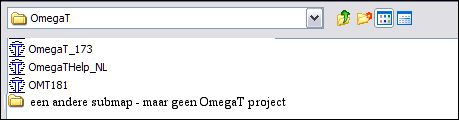
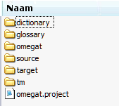

OmegaT bestanden en mappen
OmegaT werkt met drie bestandstypen.
- Projectbestanden vertaling: Zij vormen een vertaalproject. Verlies van deze bestanden kan de integriteit van het project beïnvloeden alsmede de mogelijkheid van het voltooien van uw werk. Projectbestanden zijn de meest belangrijke bestanden in OmegaT. Het zijn de bestanden waarmee u dagelijks hebt te maken bij het vertalen.
- Bestanden voor gebruikersinstellingen: Zij worden gemaakt als het gedrag van OmegaT wordt gewijzigd met voorkeursinstellingen die voor de gebruiker toegankelijk zijns. Verlies van deze bestanden zorgt er meestal voor dat OmegaT zal werken met "fabrieks"instellingen. Dit kan soms enige problemen geven als u midden in een vertaling bent.
- Toepassingsbestanden: Zij zijn opgenomen in het pakket dat u hebt gedownload, de meeste er van zijn nodig om OmegaT juist te laten functioneren. Als door enige oorzaak deze bestanden verloren gaan, download en herinstalleer dan OmegaT om ze allemaal terug te zetten.
Projectbestanden vertaling
Een OmegaT vertaalproject bestaat uit een aantal bestanden en mappen.
Locatie van projectbestanden van de vertaling
Als u een vertaalproject maakt, maakt OmegaT automatisch een lijst van mappen aan die later zullen dienen als opslagplaatsen voor de bestanden, alsook een aantal bestanden die zullen worden gebruikt om enkele voorkeuren voor het project in te stellen en om het vertaalgeheugen van het project op te slaan. Standaard worden de mappen van een vertaalproject gegroepeerd onder de hoofdmap van het project. Alternatieve locaties voor de mappen kunnen worden gekozen bij het maken van het project of tijdens de vertaling. Op deze manier is het mogelijk om bestaande mappen te kiezen of mappen te maken op locaties die passen bij uw eigen werkwijze. Open Project → Eigenschappen... en maak de nodige aanpassingen om de locaties van de mappen te wijzigen nadat een project is gemaakt.
Lijst van bestanden van het vertaalproject
In een door OmegaT geopend dialoogvenster ziet een vertaalproject er uit als een bestand met een OmegaT-pictogram er aan verbonden. In een bestandsverkenner ziet een vertaalproject er echter uit als elke andere map.

Selecteren van het item met het pictogram van OmegaT is genoeg om het project te openen. Een vertaalproject Voorbeeld_project, gemaakt met de standaard instellingen, zal als een nieuwe submap, met de volgende structuur, worden gemaakt:

In het begin zullen alle submappen van een project leeg zijn.
Omegat
- De submap omegat zal uiteindelijk een aantal bestanden bevatten, het meest belangrijke daaronder is het bestand met het vertaalgeheugen project_save.tmx (...). Het bestand project_save.tmx is het werkende vertaalgeheugen voor het project. Met de geactiveerde functie Automatisch opslaan wordt het automatisch bijgewerkt als u stopt. Het is het vertaalgeheugen dat wordt gebruikt om de vertaalde bestanden te maken. Een aantal bestanden met namen in de vorm project_save.tmx.<datum en tijd>.bak (...) zullen later aan deze submap worden toegevoegd. Zij dienen als backup voor het vertaalgeheugen van het project en worden, iedere keer als u een project opnieuw opent, bijgewerkt om de inhoud van het project weer te geven, voordat de huidige sessie die heeft veranderd.
- Het bestand stats.txt (...) bevat de statistieken over het huidige project en kan worden geopend in een werkbladtoepassing om segment- en informatie over de telling van woorden weer te geven. De informatie die het bevat is meer gedetailleerd dan wat er wordt weergegeven in het venster Projectbestanden. De bestanden ignored_words.txt en learned_words.txt, indien zij bestaan, zullen worden gebruikt door de spellingscontrole.
Source
- De submap source is de plaats van de bestanden die moeten worden vertaald. U kunt een nieuwe submap opgeven en daarin later bestanden toevoegen aan het project en ook via het venster Projectbestanden. Houdt er wel rekening mee dat de structuur van de submap source volledig in uw handen ligt. Indien de bestanden die vertaald moeten worden deel uitmaken van een boomstructuur, hoeft u slechts de bovenste submap op te geven en OmegaT zal alles kopiëren, waarbij de boomstructuur intact blijft.
Target
- Als Project → Vertaalde documenten maken wordt geselecteerd terwijl een project is geopend, worden alle bestanden in /source/, vertaald of niet, hierin gereproduceerd in dezelfde mappenhiërarchie om de huidige staat van de vertaling weer te geven. Praktisch gesproken voegt OmegaT de vertaalde informatie die is opgeslagen in /omegat/project_save.tmx samen met de brondocumenten om de inhoud van /target/ te maken.
Tm
- Vertaalgeheugens van eerdere vertalingen kunnen in deze submap worden geplaatst. Zij moeten de indeling tmx hebben. Gebruik beschikbare programma's om andere indelingen te converteren. Merk op dat project_save.tmx het vertaalgeheugen is dat de schakel is tussen uw bron en het uiteindelijke doel. De aanvullende bestanden van vertaalgeheugens zijn echter beschikbaar voor het vinden van de meest geschikte kandidaten voor niet-vertaalde segmenten.
omegat.project
- OmegaT maakt dit bestand automatisch als het project wordt gemaakt. Het bevat de parameters voor het project. De parameters die zijn opgenomen in dit bestand kunnen worden aangepast in het venster Projecteigenschappen.
- project_naam-omegat.tmx (...)
project_naam-level1.tmx
project_naam-level2.tmx
- Deze bestanden bevatten de bron- en doelsegmenten die overeenkomen met de inhoud van de map /source/ op het moment dat ze gemaakt werden (gewoonlijk is dat als de vertaalde documenten worden gemaakt).
Gebruikersbestanden
Locatie van gebruikersbestanden
Gebruikersbestanden worden opgeslagen op een afzonderlijke locatie waar elke versie van OmegaT toegang toe heeft. De locatie is afhankelijk van het platform dat u gebruikt:
|
Windows
|
- 2000 en XP: Documents and Settings\<Gebruikersnaam>\Application Data\OmegaT
- Vista: Users\<Gebruikersnaam>\AppData\Roaming\OmegaT
- Ander: <Iets>\OmegaT (<Iets> komt overeen met de locatie van de map "home" zoals die wordt vastgesteld door Java.)
|
- Linux/Solaris/FreeBSD
|
- <User Home>/.omegat (.omegat is een map, de punt die voor de naam staat maakt die onzichtbaar tenzij u typt
ls -a of een overeenkomende opdracht.)
|
- MacOSX
|
- <User
Home>/Library/Preferences/OmegaT
|
- Andere
|
- <User Home>
|
Lijst van gebruikersbestanden
- log.txt
|
- Dit bestand slaat Java-foutberichten op terwijl OmegaT wordt uitgevoerd. Als u denkt dat OmegaT zich fout gedraagt is het belangrijk om dit bestand of het relevante gedeelte daarvan op te nemen in een foutenrapport.
|
- omegat.prefs
|
- Een xml-bestand met alle toegankelijke optie-instellingen voor de GUI, als ook de gegevens voor vensterposities.
|
- filters.conf
|
- Een xml-bestand met alle gegevens die zijn ingesteld met de voorkeuren voor bestandsfilter.
|
- segmentation.conf
|
- Een xml-bestand met alle gegevens die zijn ingesteld met de voorkeuren voor zinsegmentatie.
|
Toepassingsbestanden
OmegaT bestaat uit een pakket dat u kunt downloaden vanaf SourceForge. In dit hoofdstuk gaan we uit van het platformonafhankelijke pakket dat de toepassing in een standaard Java-vorm bevat. Andere pakketten zijn: een Linux .tar pakket, een Windows-installatieprogramma -met of zonder een Java Runtime Environment, een MacOSX-installatieprogramma en een broncodepakket voor ontwikkelaars. Dit platformonafhankelijke pakket kan worden gebruikt op elk platform met een werkende Java 1.5 runtime omgeving, inclusief de platforms waarvoor een specifiek pakket bestaat. Het platformonafhankelijke pakket bestaat uit een gecomprimeerd bestand dat u in de map van uw keuze moet uitpakken bij de installatie. Uitpakken wordt gewoonlijk gedaan door te dubbelklikken op het gedownloade pakket. Eenmaal uitgepakt zal een map zijn gemaakt die de de volgende inhoud zal bevatten:
|
Bestand/
submap
|
Inhoud
|
| /docs/ |
- Alle bestanden van de gebruikershandleiding staan in deze map. U kunt ze in een internetbrowser openen om toegang te krijgen tot externe koppelingen.
|
- /images/
|
- Pictogrammen en logo-afbeeldingen zijn hierin opgenomen.
|
- /lib/
|
- Java-bestanden zijn hierin opgenomen. Zij zijn nodig voor het goed functioneren van OmegaT.
|
- join.html
|
- Dit is een normaal html-bestand dat, eenmaal geopend in uw internetbrowser, u naar de OmegaT gebruikersgroep brengt die wordt gehost op Yahoo Groups. Abonneren is niet noodzakelijk maar geeft u toegang tot enkele extra services zoals toegang tot bepaalde bestanden en onregelmatige polls, daarnaast kunt u deelnemen aan OmegaT gerelateerde discussies. De groepsarchieven zijn publiek en het raadplegen daarvan vereist geen abonnement op de groep.
|
- changes.txt
|
- Een relatief gedetailleerde lijst van aanpassingen tussen deze versie en de voorafgaande versies.
|
- license.txt
|
- De GNU GENERAL PUBLIC LICENSE. Deze licentie staat u toe om bepaalde dingen met OmegaT te doen, inclusief het aanpassen en distribueren ervan. Indien u bent geïnteresseerd in het aanpassen of distribueren van OmegaT, lees dit document dan goed door en zorg er voor dat u bekend bent met alle implicaties vóórdat u iets anders doet. Als u twijfelt, aarzel dan niet om de projectleden direct te benaderen ofwel door hen een mail te sturen vanaf de pagina van SourceForge of door een publieke mail te sturen aan de gebruikersgroep.
|
- doc-license.txt
|
- De GNU GENERAL PUBLIC LICENSE. Deze licentie behandelt de documentatie. Zie boven.
|
- readme.txt
|
- Dit bestand is heel belangrijk en u zou het gelezen moeten hebben voordat u met OmegaT begon. Het bevat algemene informatie over OmegaT, waar meer informatie te vinden is, hoe mee te doen etc. Het is vertaald in een aantal talen.
|
- Omegat
|
- Een tekstbestand dat twee regels bevat:
#!/bin/bash
java -jar OmegaT.jar $*
U zult dit bestand misschien handig vinden als u het uitvoerbaar maakt (chmod +x OmegaT) vanaf de opdrachtregel nadat u er zeker van bent dat u in de map /OmegaT_2.0/ bent. Vanaf nu kunt u OmegaT starten door dit bestand vanaf de opdrachtregel aan te roepen.
|
- OmegaT.bat
|
- Een batch-bestand gebruikt om OmegaT te starten vanaf de opdrachtregel van Windows. Het bevat slechts de volgende regel:
java -jar OmegaT.jar %*
|
- OmegaT.jar
|
- De hoofdtoepassing OmegaT. U moet dit bestand aanroepen vanaf de opdrachtregel of starten vanuit uw bestandsbeheerder (gewoonlijk door te dubbelklikken) om OmegaT te starten.
|